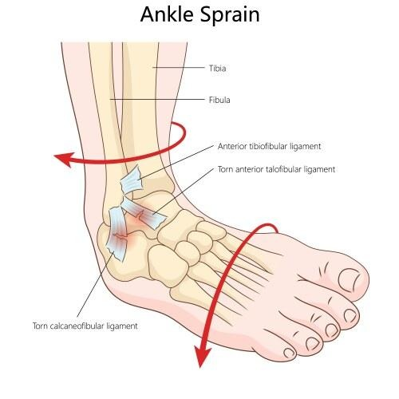
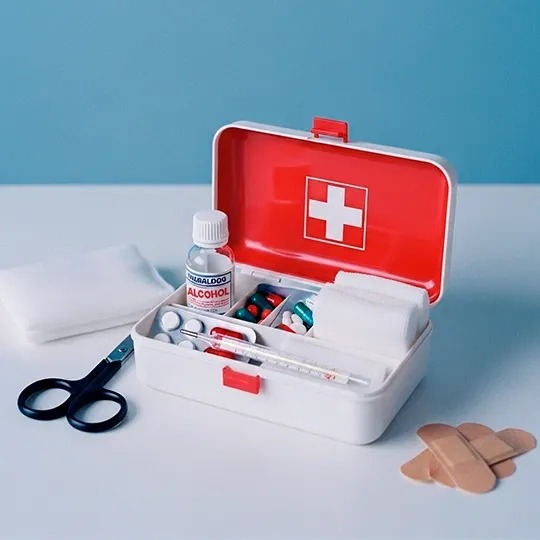
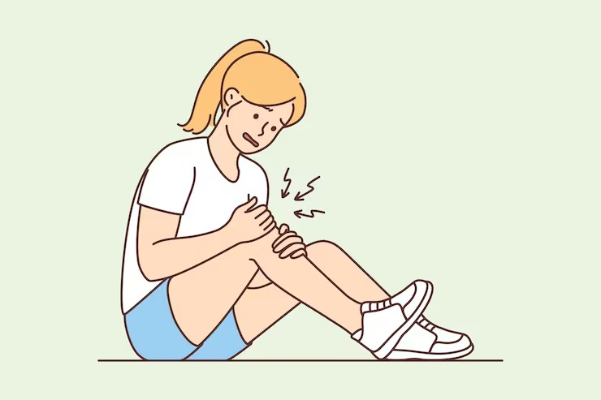
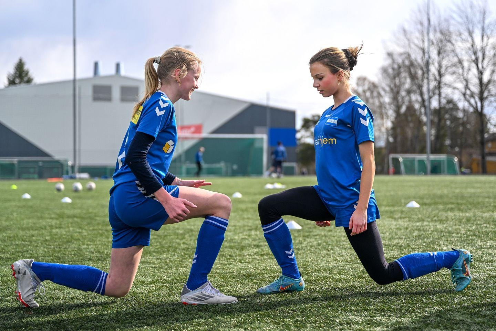

Jugá con pasión.
Cuidá tu cuerpo.
Una guía práctica para prevenir lesiones de tobillo y rodilla, reconocer señales de alarma y saber cómo actuar en la cancha.
Explorar los temas ↓Conocer la iniciativaLa prevención también se entrena.
Este espacio es parte de una intervención educativa y práctica dirigida a las jugadoras del equipo femenino del CCDR Montes de Oca. Aquí encontrarás contenidos que complementan las estaciones informativas y el taller de vendaje: lesiones frecuentes, qué hacer ante una lesión y hábitos para entrenar con mayor seguridad. Podés consultarlos desde tu celular en cualquier momento.
¿Qué querés aprender hoy?
Elegí un tema para abrir su página con explicaciones, recomendaciones y material de consulta.

Lesiones frecuentes
Conocé cómo ocurren las lesiones de tobillo y rodilla y aprendé a identificar sus principales señales.

Primeros minutos tras una lesión
Qué hacer al momento de una lesión, cuándo solicitar ayuda y cómo favorecer una recuperación segura.

Rodilla y fútbol femenino
Factores que influyen en las lesiones del ligamento cruzado anterior y cómo reducir riesgos.

Hábitos y prevención
Calentamiento, ejercicios, calzado, descanso y hábitos para jugar de manera más segura.
Reconocer las señales es parte del juego.
Ante dolor intenso, deformidad, pérdida de sensibilidad o incapacidad para apoyar tras una lesión, detené la actividad y buscá atención profesional. En caso de emergencia, solicitá ayuda de inmediato.